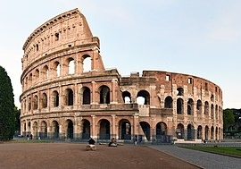

The Colosseum is an elliptical amphitheatre in the centre of the city of Rome, Italy, just east of the Roman Forum. It is the largest ancient amphitheatre ever built, and is still the largest standing amphitheatre in the world, despite its age. Construction began under the emperor Vespasian (r.?69ñ79 AD) in 72[1] and was completed in AD 80 under his successor and heir, Titus (r.?79ñ81).[2] Further modifications were made during the reign of Domitian (r.?81ñ96).[3] The three emperors who were patrons of the work are known as the Flavian dynasty, and the amphitheatre was named the Flavian Amphitheatre (Latin: Amphitheatrum Flavium; Italian: Anfiteatro Flavio [a?fite'a?tro 'fla?vjo]) by later classicists and archaeologists for its association with their family name (Flavius).
